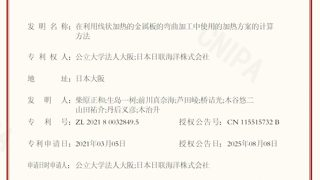
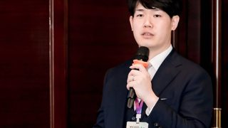
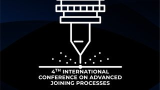
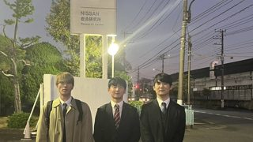

※画像は生成AIで作成したイメージです。このテーマの説明文は準備中です。
関連するページ
関連するお知らせ（題名から自動で集めたもの。42件）
 特許：柴原正和 教授、生島一樹 准教授、前川真奈海さん(現川崎重工業)、芦田崚さん(現日揮)、橋詰光さん(現NEC)、木谷悠二さん(現DMG森精機)、山田祐介さん(現シマノ)、D3加藤拓也 さんが「線状加熱」 に関する国際特許(中国)を取得しました。
特許：柴原正和 教授、生島一樹 准教授、前川真奈海さん(現川崎重工業)、芦田崚さん(現日揮)、橋詰光さん(現NEC)、木谷悠二さん(現DMG森精機)、山田祐介さん(現シマノ)、D3加藤拓也 さんが「線状加熱」 に関する国際特許(中国)を取得しました。
特許：柴原正和 教授、生島一樹 准教授、前川真奈海さん(現川崎重工業)、芦田崚さん(現日揮)、橋詰光さん(現NEC)、木谷悠二さん(現DMG森精機)、山田祐介さん(現シマノ)が「線状加熱」 に関する国際特許(中国)を取得しました。 報告：オーストリアGrazで行われた国際会議14th International Seminar on Numerical Analysis of Weldabilityに、柴原研究室から前田新太郎 特任助教、D3王聞達 さん の2件が論文発表しました。
報告：オーストリアGrazで行われた国際会議14th International Seminar on Numerical Analysis of Weldabilityに、柴原研究室から前田新太郎 特任助教、D3王聞達 さん の2件が論文発表しました。 特許：柴原正和 教授、生島一樹 准教授、前川真奈海さん(現川崎重工業)、芦田崚さん(現日揮)、橋詰光さん(現NEC)、木谷悠二さん(現DMG森精機)、山田祐介さん(現シマノ)が「線状加熱」 に関する国際特許(韓国)を取得しました。
特許：柴原正和 教授、生島一樹 准教授、前川真奈海さん(現川崎重工業)、芦田崚さん(現日揮)、橋詰光さん(現NEC)、木谷悠二さん(現DMG森精機)、山田祐介さん(現シマノ)が「線状加熱」 に関する国際特許(韓国)を取得しました。 特許：柴原正和 教授、生島一樹 准教授、河原充 特任研究員、竹内梨乃さん(現 三菱重工)、橋詰光さん(現 NEC)が「金属3D積層造形解析」 に関する 国際特許(アメリカ合衆国)を取得しました。
特許：柴原正和 教授、生島一樹 准教授、河原充 特任研究員、竹内梨乃さん(現 三菱重工)、橋詰光さん(現 NEC)が「金属3D積層造形解析」 に関する 国際特許(アメリカ合衆国)を取得しました。 報告：公明新聞の第6面に、「柴原研究室・生島研究室」ならびに大阪公立大学発ベンチャー企業「株式会社エスアイテック」の取り組みが掲載されました。
報告：公明新聞の第6面に、「柴原研究室・生島研究室」ならびに大阪公立大学発ベンチャー企業「株式会社エスアイテック」の取り組みが掲載されました。 受賞：柴原研究室 M2 山邉晃瑠さんが、国際学会International Seminar on Welding Science and Engineering 2025 (WSE2025) において、Outstanding Presentation Award を受賞しました！！
受賞：柴原研究室 M2 山邉晃瑠さんが、国際学会International Seminar on Welding Science and Engineering 2025 (WSE2025) において、Outstanding Presentation Award を受賞しました！！
報告：8/10に中国北京市で行われましたInternational Seminar on Welding Science and Engineering 2025 (WSE2025) において柴原研究室 前田新太郎 特任助教とM2山邉晃瑠さんが国際会議発表を行いました。
報告：ポルトガルで行われる4th International Conference on Advanced Joining Processes (AJP2025)という国際会議に、熊本大学 寺崎研究室と共著で、柴原研究室から1件の発表をエントリーしました。 報告：8月8日～11日に中国北京で行われる10th International Conference on Welding Science and Engineering (WSE2025)という国際会議に、柴原研究室から M2 山邉晃瑠 さん、前田新太郎 特任助教 の講演をエントリーしました。
報告：8月8日～11日に中国北京で行われる10th International Conference on Welding Science and Engineering (WSE2025)という国際会議に、柴原研究室から M2 山邉晃瑠 さん、前田新太郎 特任助教 の講演をエントリーしました。 報告：オーストリアで行われる14th International Seminar on Numerical Analysis of Weldabilityという国際会議に、柴原研究室から2件の発表をエントリーしました。
報告：オーストリアで行われる14th International Seminar on Numerical Analysis of Weldabilityという国際会議に、柴原研究室から2件の発表をエントリーしました。 特許：JSTの知財活用支援事業に採択され、JSTよりPCT出願（国際特許出願）に関する支援を受けることが決定いたしました。発明の名称は、「摩擦攪拌接合(FSW)の解析方法及びプログラム」です。
特許：JSTの知財活用支援事業に採択され、JSTよりPCT出願（国際特許出願）に関する支援を受けることが決定いたしました。発明の名称は、「摩擦攪拌接合(FSW)の解析方法及びプログラム」です。 国際特許：柴原研究室の国際特許(デジタルツイン)がJSTによるヒアリング審査を経て、アメリカ、中国、ドイツ、イギリス、フランスの5カ国への移行支援が決定しました。
国際特許：柴原研究室の国際特許(デジタルツイン)がJSTによるヒアリング審査を経て、アメリカ、中国、ドイツ、イギリス、フランスの5カ国への移行支援が決定しました。 報告：柴原正和 准教授、生島一樹 准教授、前田新太郎 特任助教、B4 横山暁生 さん、B3 山本航平 さんが 共同研究先である 川崎重工業 明石工場 技術開発本部 を訪問し、FSW試験について見学を行いました。
報告：柴原正和 准教授、生島一樹 准教授、前田新太郎 特任助教、B4 横山暁生 さん、B3 山本航平 さんが 共同研究先である 川崎重工業 明石工場 技術開発本部 を訪問し、FSW試験について見学を行いました。
報告：前田新太郎 特任助教、M2 幅田真史 さん、M1 四方皓大 さん、B4 横山暁生 さんが 共同研究先である 日産自動車 追浜工場 を訪問し、スポット溶接試験について見学を行いました。
新しい15件を表示しています。すべてのお知らせは一覧から見られます。